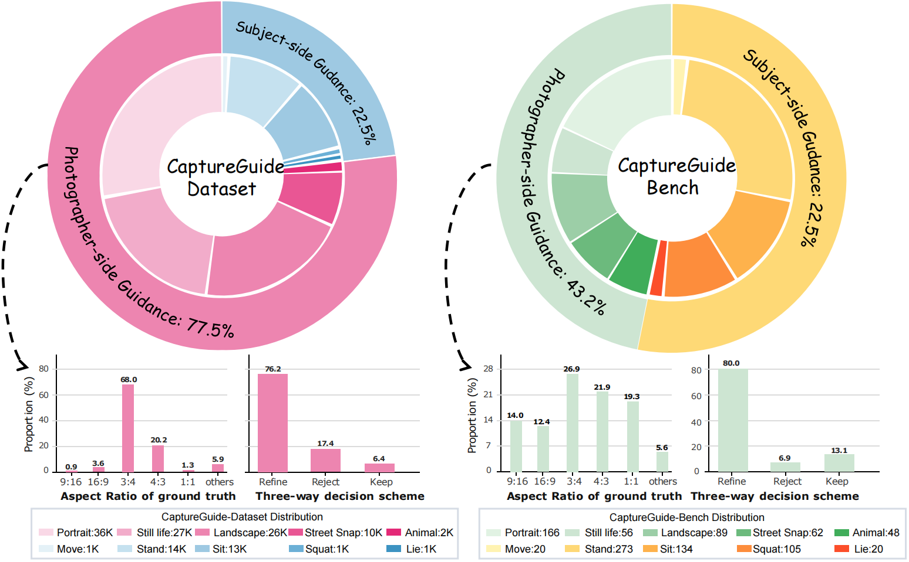
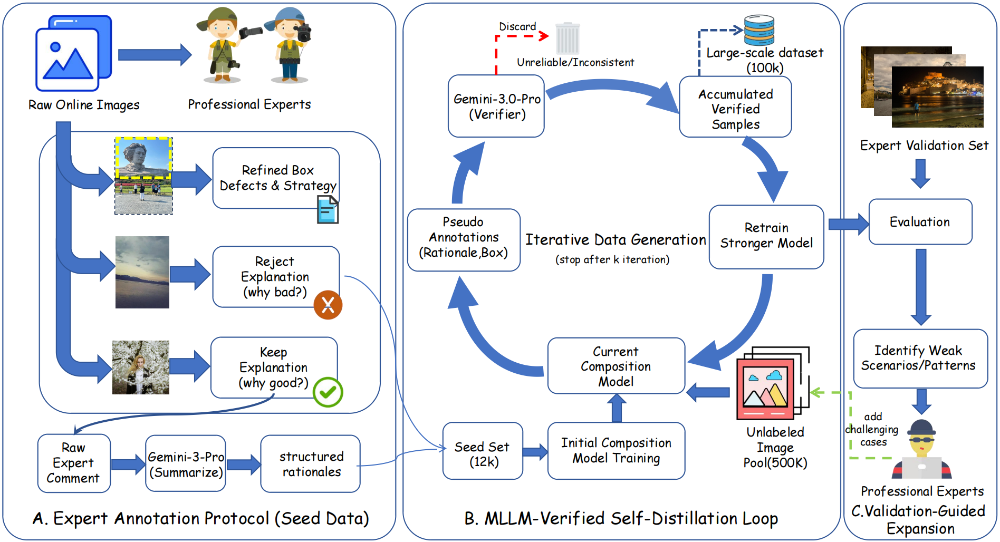
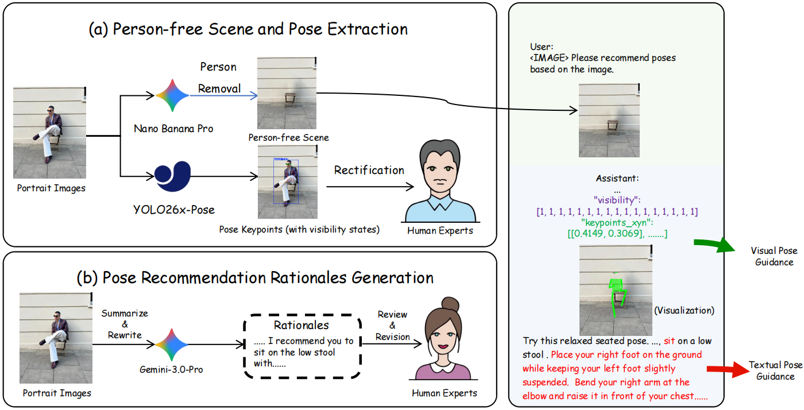
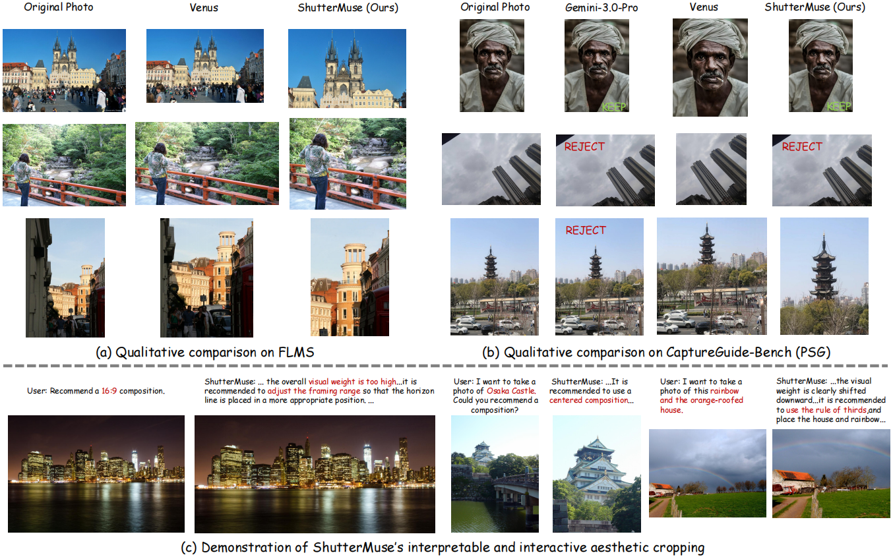

Abstract
Real-world photography requires capture-time decisions from both the photographer and the subject. Existing aesthetic cropping benchmarks usually focus on post-hoc crop prediction, while subject-side pose recommendation and interactive capture guidance remain underexplored.
We introduce CaptureGuide-Bench, a benchmark for photographer-side composition decision/refinement and subject-side scene-conditioned pose recommendation, and construct CaptureGuide-Dataset, a large-scale dataset of approximately 130K samples with textual rationales and structured visual annotations. Built on this data, ShutterMuse is trained with supervised and reinforcement fine-tuning to provide structured, interpretable photography guidance.
Task Overview
Photographer-Side Guidance
The model can keep, refine, or reject the current framing, and predicts a composition box when refinement is needed.
Subject-Side Guidance
The model recommends scene-conditioned portrait poses with COCO-17 keypoints and visibility states.
CaptureGuide Dataset and Bench
CaptureGuide contains photographer-side composition guidance and subject-side pose guidance tasks. CaptureGuide-Dataset is used for model development, while CaptureGuide-Bench evaluates composition decision, composition refinement, and pose recommendation quality.



Results

Photographer-Side Guidance
| Method | IoU ↑ | BDE ↓ | R ↑ | RSR ↑ | KSR ↑ | MLLM-Score ↑ |
|---|---|---|---|---|---|---|
| Gemini-3.0-Pro | 63.62 | 0.070 | 47.48 | 82.76 | 89.09 | 0.54 |
| GPT-5.5 | 65.44 | 0.091 | 41.84 | 10.34 | 81.82 | 0.48 |
| Venus | 69.43 | 0.076 | 57.27 | 0.00 | 3.64 | 0.57 |
| ShutterMuse | 74.30 | 0.054 | 70.03 | 82.76 | 74.55 | 0.64 |
Subject-Side Guidance
| Method | Plausibility ↑ | Interaction ↑ | Aesthetics ↑ | Mean ↑ | Time ↓ | Tokens ↓ |
|---|---|---|---|---|---|---|
| Nano-Banana-Pro | 0.63 | 0.35 | 0.17 | 0.39 | 55.16 | 1370 |
| GPT-Image-2 | 0.59 | 0.29 | 0.15 | 0.35 | 102.61 | 1427 |
| ShutterMuse | 0.58 | 0.27 | 0.14 | 0.34 | 4.96 | 412 |
Quick Start
Install dependencies and set checkpoint paths before running inference.
git clone https://github.com/lijayuTnT/ShutterMuse.git
cd ShutterMuse
conda create -n shuttermuse python=3.10 -y
conda activate shuttermuse
pip install -r requirements.txt
export MODEL_PATH=/path/to/base-or-merged-qwen-vl-checkpoint
export LORA_PATH=/path/to/shuttermuse-lora
export OUTPUT_DIR=outputs/quick_startPhotographer-Side
bash evaluation/scripts/quick_start.sh \
--side photographer \
--image test/401128801616615964.webp \
--model-path "$MODEL_PATH" \
--lora-path "$LORA_PATH" \
--output-dir "$OUTPUT_DIR"Subject-Side
bash evaluation/scripts/quick_start.sh \
--side subject \
--image /path/to/scene.jpg \
--model-path "$MODEL_PATH" \
--lora-path "$LORA_PATH" \
--output-dir "$OUTPUT_DIR"Resources
Citation
@misc{li2026shuttermuse,
title = {ShutterMuse: Capture-Time Photography Guidance with MLLMs},
author = {Li, Jiayu and Fang, Yixiao and Hu, Tianyu and Cheng, Wei and Huang, Ping and Fan, Zheheng and Yu, Gang and Ma, Xingjun},
year = {2026},
note = {Preprint}
}